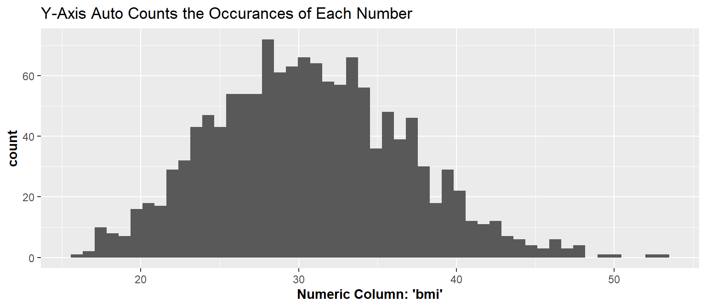
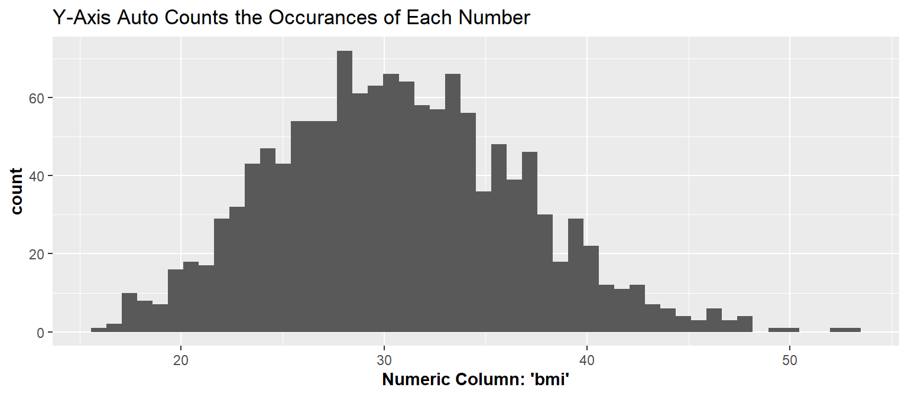
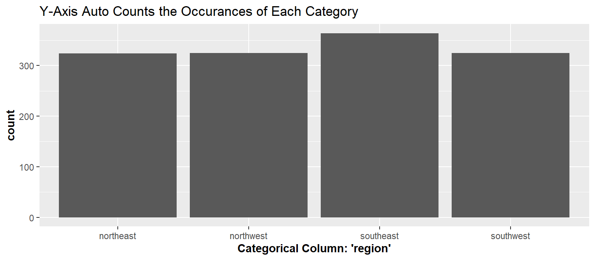

Code
ggplot(dat, aes(x=bmi))+
geom_histogram(bins = 50)+
labs(
title="Y-Axis Auto Counts the Occurances of Each Number",
x="Numeric Column: 'bmi'")+
theme(axis.title = element_text(face="bold"))

The four main plots we will go over today:
What kinds of data do we have?
ggplot(dat, aes(x=bmi))+
geom_histogram(bins = 50)+
labs(
title="Y-Axis Auto Counts the Occurances of Each Number",
x="Numeric Column: 'bmi'")+
theme(axis.title = element_text(face="bold"))
ggplot(dat, aes(x=region))+
geom_bar()+
labs(
title="Y-Axis Auto Counts the Occurances of Each Category", x="Categorical Column: 'region'")+
theme(axis.title = element_text(face="bold"))
ggplot(dat, aes(x=region, y=bmi))+
geom_boxplot()+
labs(x="Categorical Column: 'region'", y="Numeric Column: 'bmi'")+
theme(axis.title = element_text(face="bold"))
ggplot(dat, aes(x=age, y=bmi))+
geom_point()+
labs(x="Numeric Column: 'Age'", y="Numeric Column: 'bmi'")+
theme(axis.title = element_text(face="bold"))
Use this code to get the data
library(tidyverse)
dat <- read_csv("https://raw.githubusercontent.com/BrighamEaquinto/brighameaquinto.github.io/master/datasets/insurance.csv")